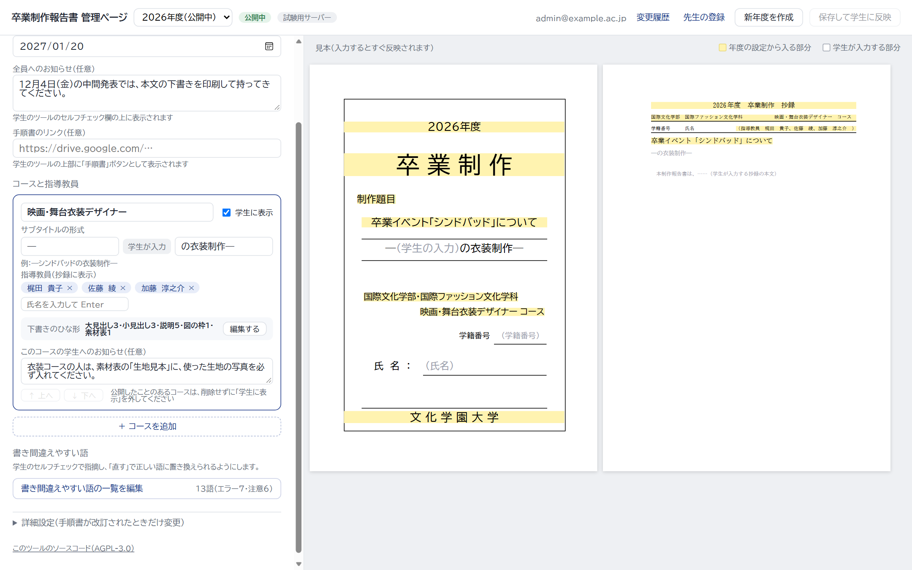
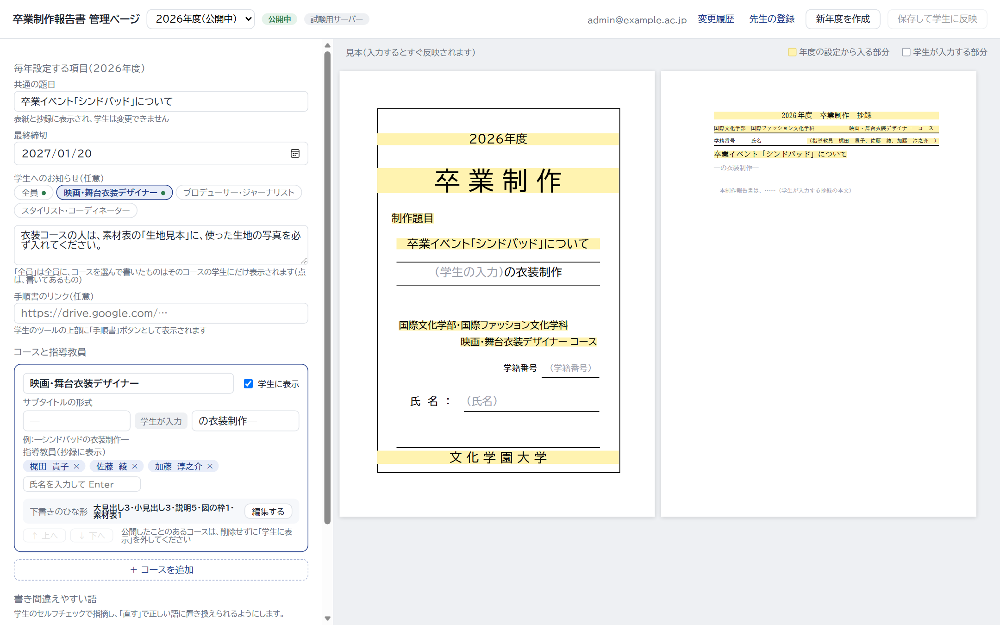
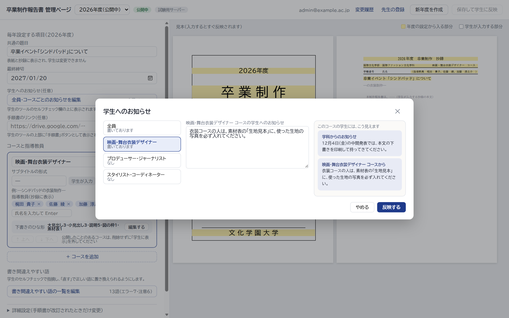

学生へのお知らせを、コースごとにも出す（見た目の案）
今の「学生へのお知らせ」は、全員に同じものが出ます。これに加えて、コースごとのお知らせを書けるようにし、学生にはそのコースのものだけが出るようにします。決めていただきたいのは、管理ページで書く場所（案A〜C）と、学生の画面での見せ方（見せ方1・2）です。お知らせの文はどれも例です。
管理ページで書く場所
案A コースのカードに、そのコースのお知らせの欄を足すコースの設定（指導教員・ひな形）と同じ場所にあるので分かりやすい。今の欄は「全員へのお知らせ」になる。コースが多いと左の欄が長くなる
案B お知らせの欄を「全員・コースごと」の切り替えにするお知らせが1か所にまとまる。上のボタンで切り替えて書く（点は、書いてあるもの）
案C ボタンから開く窓で、まとめて編集する左で全員・コースを選び、まん中で書く。右に、そのコースの学生にどう見えるかが出る。左の欄はすっきりする
学生の画面での見せ方
見せ方1 1つの枠に続けて出す「学科からのお知らせ」の枠の中に、全員へのお知らせと、自分のコースのお知らせを続けて出す。右の欄が今とほとんど変わらない
見せ方2 枠を分けるコースのお知らせは、色を変えた別の枠に出す。どちらからのお知らせか、ひと目で分かる。右の欄が少し長くなる